Inhalt Index DeskTop Bronstein

 Algebra und Diskrete Mathematik Elementare Zahlentheorie Kongruenzen und Restklassen Quadratische Kongruenzen
Algebra und Diskrete Mathematik Elementare Zahlentheorie Kongruenzen und Restklassen Quadratische Kongruenzen


Eine Kongruenz 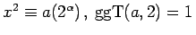, ist genau dann lösbar, wenn 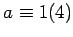 für 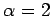 und 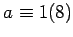 für 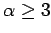 ist. Sind diese Bedingungen erfüllt, dann gibt es für 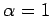 eine Lösung, für zwei und für vier Lösungen modulo 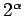.
Für Kongruenzen der allgemeinen Form
| 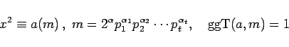 | (5.280a) |
sind
| 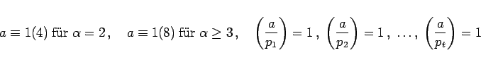 | (5.280b) |
notwendige Bedingungen für die Lösbarkeit. Sind alle diese Bedingungen erfüllt, dann ist die Anzahl der Lösungen gleich 2t für  und 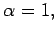 gleich 2t+1 für und gleich 2t+2 für 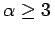.
und 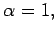 gleich 2t+1 für und gleich 2t+2 für 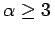.